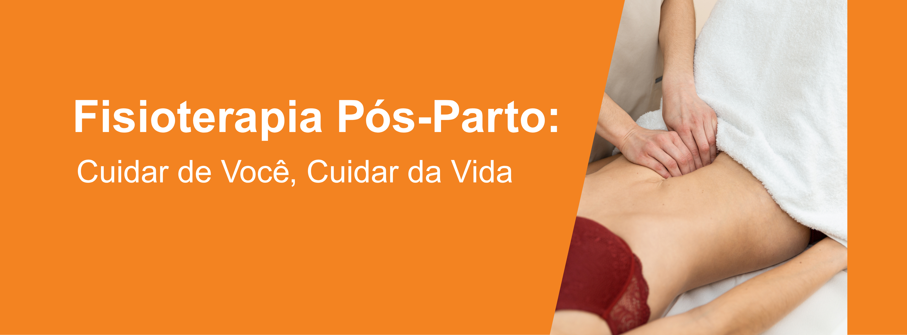
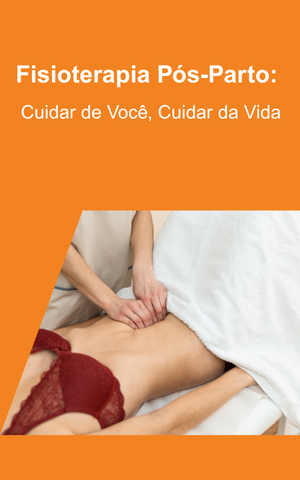
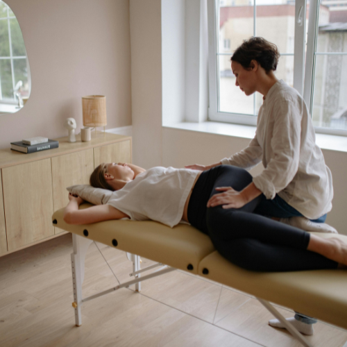

Por que fazer Fisioterapia Pós-Parto?
Durante a gravidez e o parto, seu corpo passa por mudanças significativas.
Muitas mulheres enfrentam desconfortos como:
Diástase abdominal
Dor Lombar
Cicatrizes dolorosas
Dificuldade para sentar
Incontinência urinária
Cuidar de Você, Cuidar da Vida
Após o nascimento do seu bebê, seu corpo passa por uma transformação profunda
— não apenas física, mas emocional e energética. A fisioterapia pós-parto é
um cuidado essencial para ajudar você a se recuperar com segurança, fortalecer o
corpo, aliviar dores e reconectar-se com sua musculatura após a gravidez e o parto.

Benefícios da Fisioterapia Pós-Parto
✅ Redução ou eliminação da incontinência urinária
✅ Alívio de dores na coluna, bacia e pernas
✅ Melhora da força e sustentação abdominal
✅ Prevenção de prolapso e futuras cirurgias
✅ Recuperação segura para voltar à atividade física
✅ Melhora da autoestima e conexão com o corpo
✅ Suporte para mães que e carregam o bebê